Start from a ready-made system
A family desktop, a gaming machine, a developer's workstation, a home server. Pick one, then change anything in it. Your choices always win over the template's.
Your whole system in one window: start from a ready-made system, change any setting, go back in one step.
Early: it installs and runs real NixOS systemsFor NixOS, and for Nix on any other system · MIT
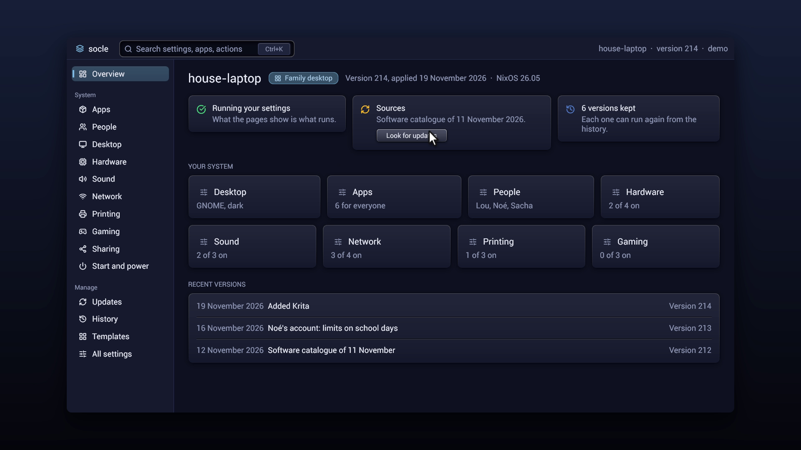
A family desktop, a gaming machine, a developer's workstation, a home server. Pick one, then change anything in it. Your choices always win over the template's.
Apps, people, desktop, hardware, network, printing, sharing: each page is made from the options of the system itself, so it is never behind. Every other option is one search away.
Each change is shown in words before it applies. The new system runs on trial: if nobody says "Keep" within 60 seconds, it goes back by itself. A broken network or screen fixes itself.
Every version of the system stays, with the settings that made it. Go back to any of them, then free the space of the old ones when you want.
Socle writes data, never Nix code. The configuration stays a flake that you can read, keep in git and build
with nixos-rebuild, without Socle. Your own Nix lives beside it, untouched.
Save your system as a template, extend someone else's, publish it as a git repository. Anyone can start a machine from it.
Socle's images boot into its installer: a disk, a person, a template, done. The system comes with Determinate Nix, nh and nix-output-monitor, each one a setting.
On NixOS, Socle runs the whole machine. On any other Linux or on macOS, it runs your apps, shell and settings through Home Manager, and installs Nix if it is missing.
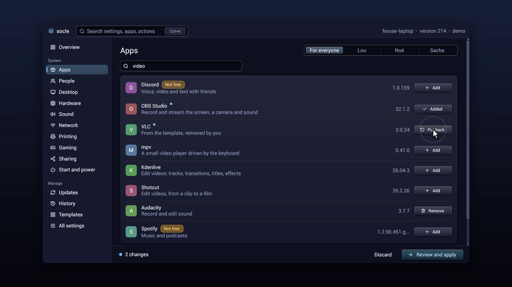
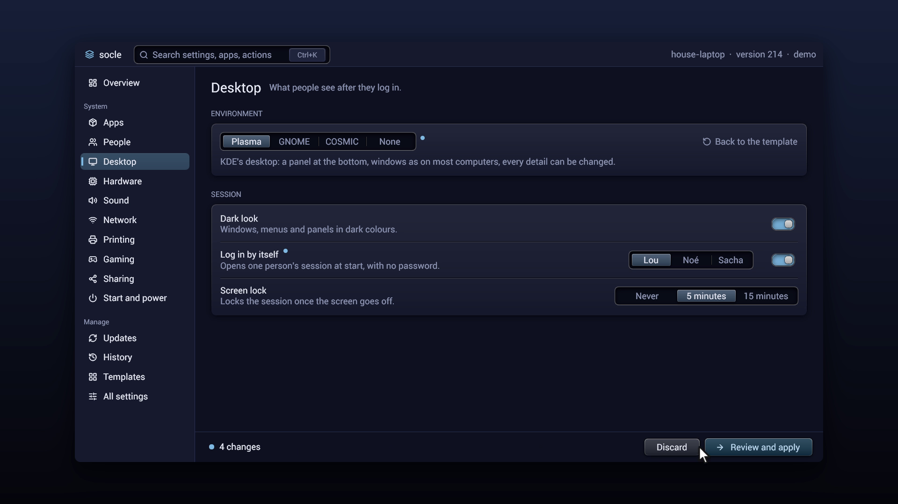
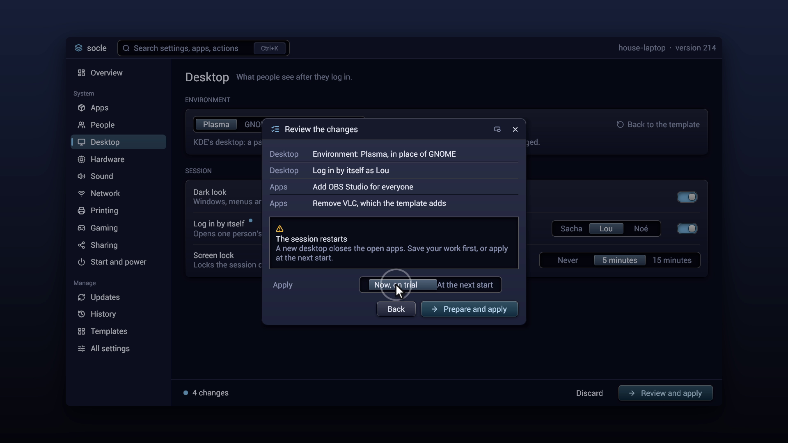
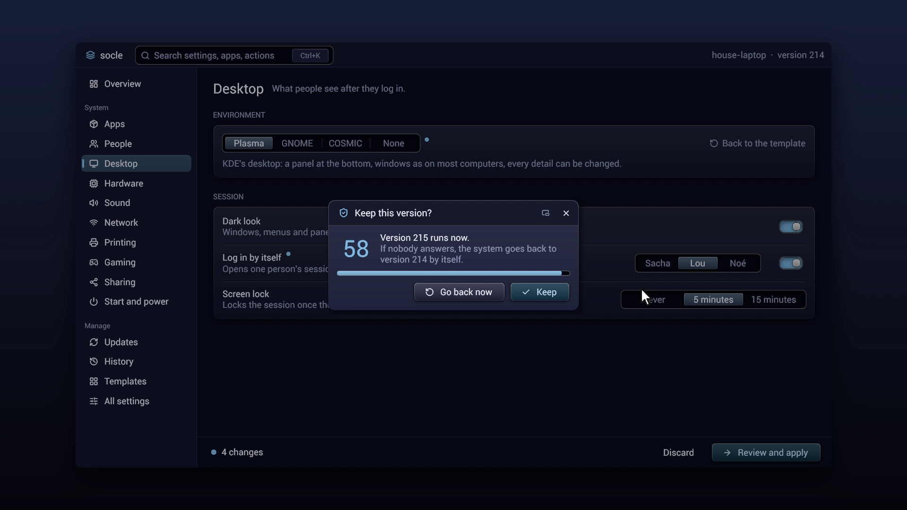
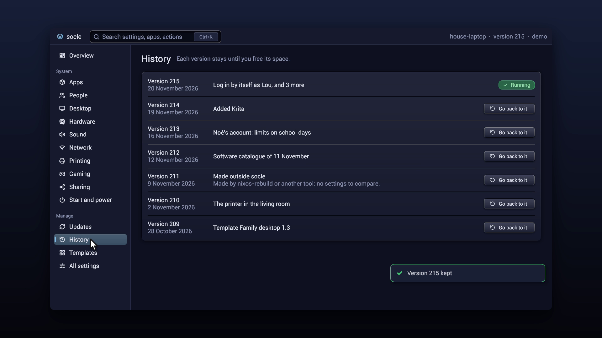
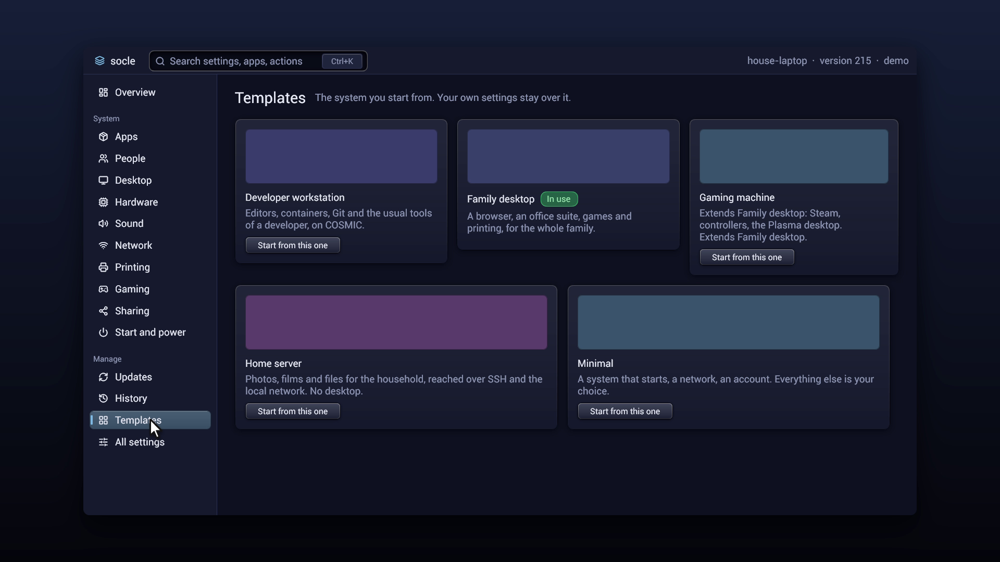
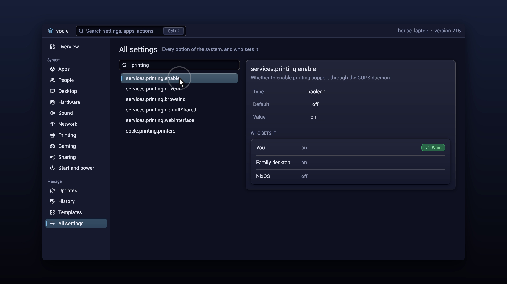
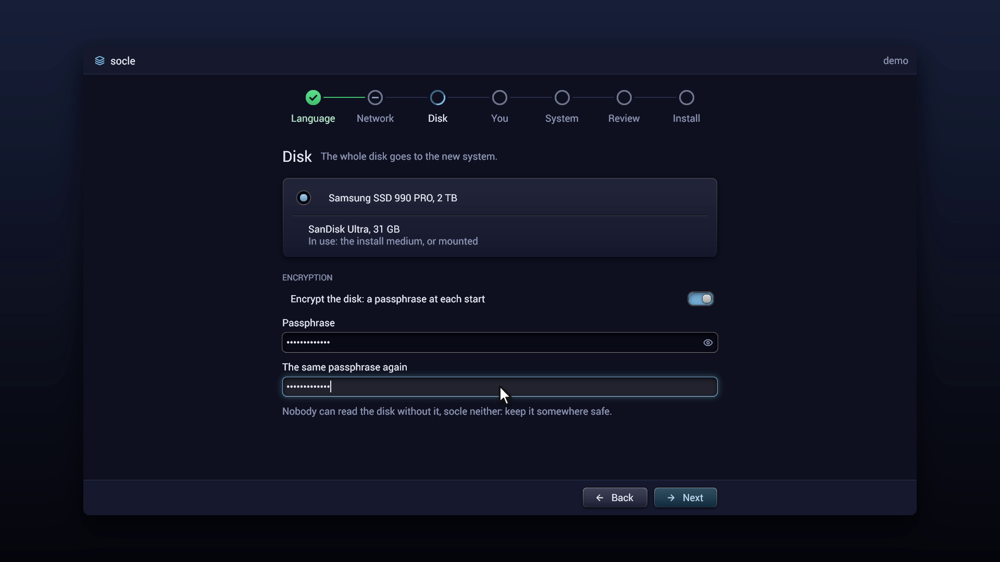
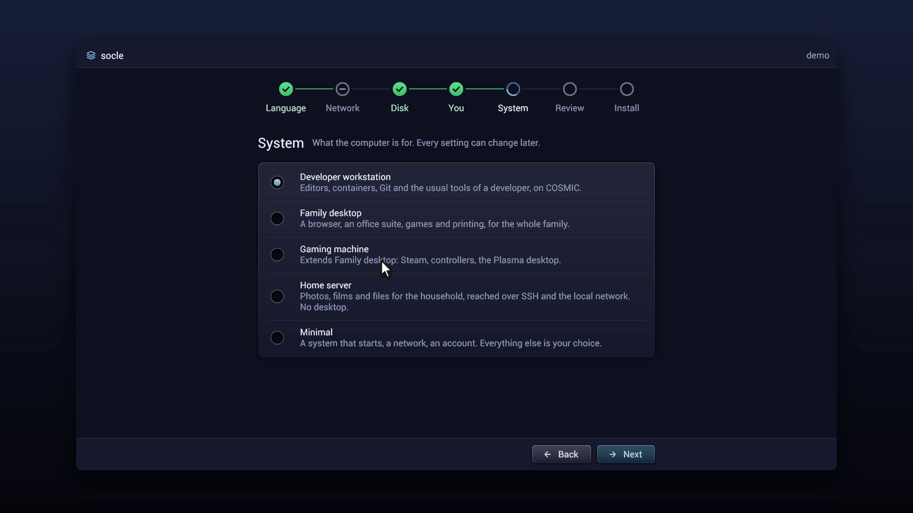
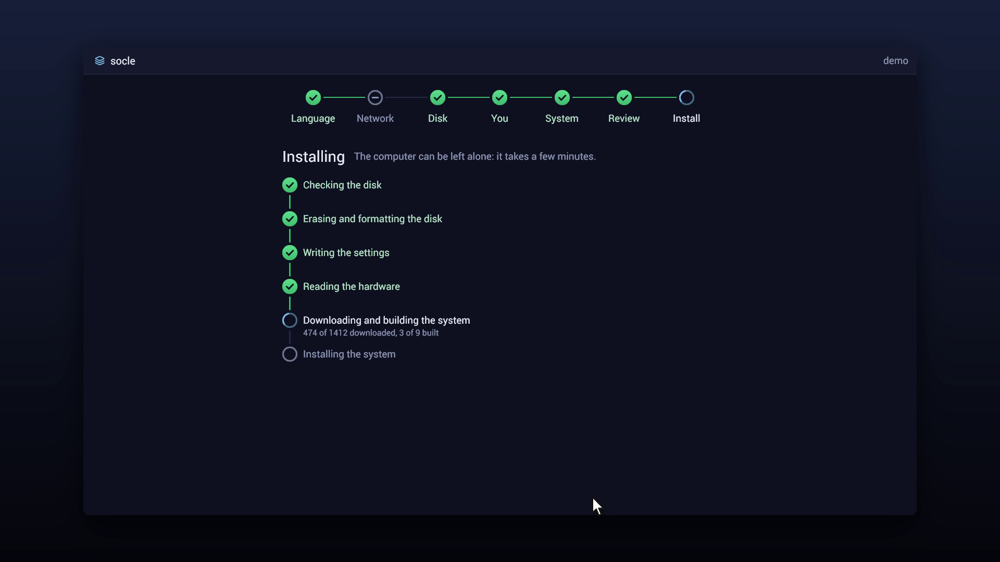
A NixOS that Socle manages, its window open. Every change you apply is real, inside the machine. The
password is socle.
nix run github:sachahjkl/socle#vm
Start it from a Desktop or a Minimal image of the releases. The installer takes one whole disk, and needs UEFI and the network. From any NixOS live image:
nix run github:sachahjkl/socle -- install
Socle offers to take the machine over from a template; nothing changes until you apply. Or just look, on its demo system: the roadmap.
nix run github:sachahjkl/socle -- --demo